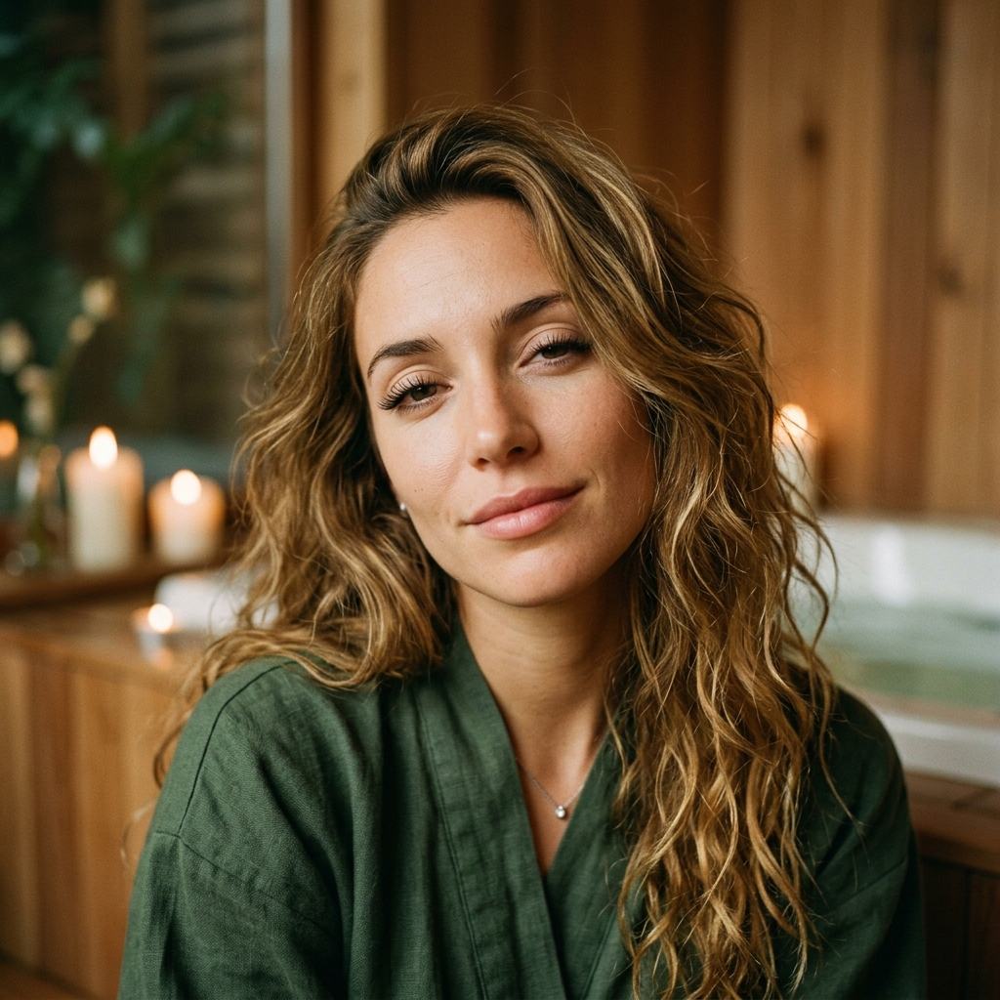
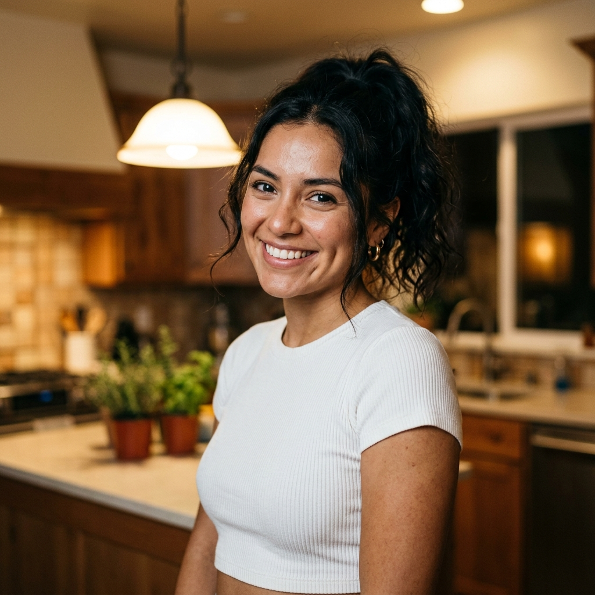
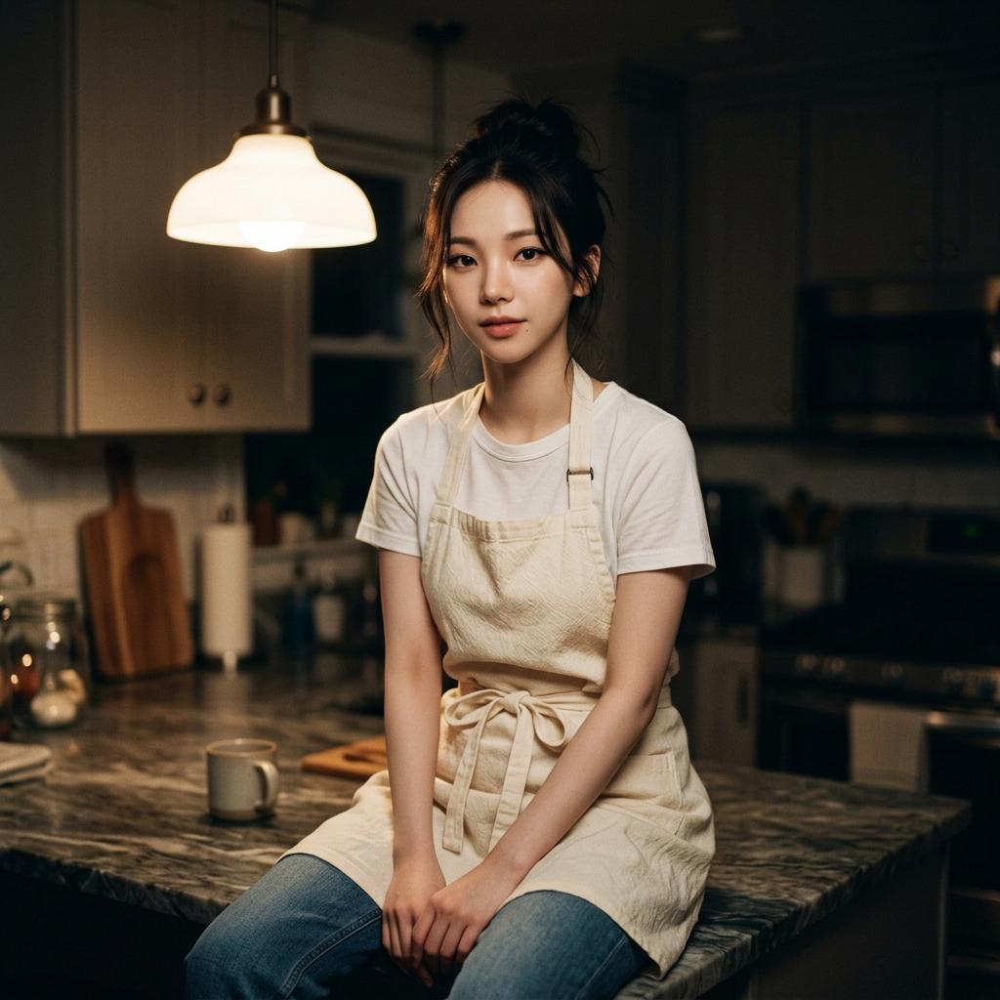

🌎
8명의 선생님과 함께해요!
스페인·중남미 각지에서 온 8명의 선생님이 강의를 나눠 맡았어요. 매 강 다른 선생님이 옆자리에 앉아 자기 고향 말씨로 예문을 들려주니, 여러 지역의 스페인어를 자연스럽게 만나게 돼요. ¿Listos? ¡Empezamos!
소피아 발레리아
발레리아 발렌티나
발렌티나 루나
루나 파울라
파울라
👩🏫 선생님 8명 자세히 보기 →
발레리아
마르티나
카밀라발렌티나루나파울라
엘레나📚 전체 커리큘럼 TODO EL CURSO · 45 LECCIONES · 45강 공개
01스페인어 공부 시작하기함께 가는 학습법, 틀려도 괜찮아소피아쌤02명사의 성(性)남성형 el과 여성형 la소피아쌤03인사하기Hola와 시간대별 인사소피아쌤04직접목적격 te'너를'을 동사 앞에 붙이기마르티나쌤05-ar 규칙동사hablar 현재시제 활용마르티나쌤06자기소개하기이름·출신·나이 (ser·tener)소피아쌤07숫자 0~100시간·나이·가격의 토대루나쌤08관사el·la·los·las 와 un·una발레리아쌤09시간 묻고 답하기¿Qué hora es?루나쌤10색·옷·과일 어휘일상 단어 익히기카밀라쌤11알파벳과 발음모음과 조심할 글자소피아쌤12R과 RR 발음혀 굴리기소피아쌤13지역별 어휘 차이스페인 vs 중남미카밀라쌤14muy vs mucho'아주'와 '많이' 구분발렌티나쌤15요일los días de la semana루나쌤16카페에서 주문하기un café, por favor카밀라쌤17ser vs estar두 개의 '이다'발레리아쌤18음식 어휘타파스·파에야, 멕시코의 맛카밀라쌤19가격 묻고 흥정하기¿Cuánto cuesta?카밀라쌤20-er·-ir 규칙동사comer·vivir 현재시제마르티나쌤21가족la familia엘레나쌤22길 묻기¿Dónde está…?파울라쌤23복수형 만들기-s / -es발레리아쌤24집과 사무실la casa y la oficina엘레나쌤25두 개의 과거단순과거 vs 과거불완료발레리아쌤26대중교통el transporte파울라쌤27형용사위치와 일치발레리아쌤28날씨el tiempo루나쌤29병원·약국la salud파울라쌤30날짜·시간·가격 종합fechas y precios루나쌤31초대·약속invitaciones엘레나쌤32의문사qué·dónde·cómo로 묻기발렌티나쌤33색상 어휘 심화los colores 와 일치카밀라쌤34감사와 사과gracias 와 perdona발렌티나쌤35부정문no·nada·nunca·nadie발렌티나쌤36요리la cocina엘레나쌤37전화 통화por teléfono파울라쌤38미래 시제ir a + 동사원형, 단순미래마르티나쌤39직장·학교trabajo y escuela파울라쌤40관광지lugares turísticos파울라쌤41반사동사me llamo, me levanto마르티나쌤42스포츠·여가el deporte y el ocio발렌티나쌤43공공장소 예절buenos modales엘레나쌤44접속사y·pero·porque·aunque발렌티나쌤45졸업¡Felicidades! 수료를 축하해요엘레나쌤
루나쌤08관사el·la·los·las 와 un·una발레리아쌤09시간 묻고 답하기¿Qué hora es?루나쌤10색·옷·과일 어휘일상 단어 익히기카밀라쌤11알파벳과 발음모음과 조심할 글자소피아쌤12R과 RR 발음혀 굴리기소피아쌤13지역별 어휘 차이스페인 vs 중남미카밀라쌤14muy vs mucho'아주'와 '많이' 구분발렌티나쌤15요일los días de la semana루나쌤16카페에서 주문하기un café, por favor카밀라쌤17ser vs estar두 개의 '이다'발레리아쌤18음식 어휘타파스·파에야, 멕시코의 맛카밀라쌤19가격 묻고 흥정하기¿Cuánto cuesta?카밀라쌤20-er·-ir 규칙동사comer·vivir 현재시제마르티나쌤21가족la familia엘레나쌤22길 묻기¿Dónde está…?파울라쌤23복수형 만들기-s / -es발레리아쌤24집과 사무실la casa y la oficina엘레나쌤25두 개의 과거단순과거 vs 과거불완료발레리아쌤26대중교통el transporte파울라쌤27형용사위치와 일치발레리아쌤28날씨el tiempo루나쌤29병원·약국la salud파울라쌤30날짜·시간·가격 종합fechas y precios루나쌤31초대·약속invitaciones엘레나쌤32의문사qué·dónde·cómo로 묻기발렌티나쌤33색상 어휘 심화los colores 와 일치카밀라쌤34감사와 사과gracias 와 perdona발렌티나쌤35부정문no·nada·nunca·nadie발렌티나쌤36요리la cocina엘레나쌤37전화 통화por teléfono파울라쌤38미래 시제ir a + 동사원형, 단순미래마르티나쌤39직장·학교trabajo y escuela파울라쌤40관광지lugares turísticos파울라쌤41반사동사me llamo, me levanto마르티나쌤42스포츠·여가el deporte y el ocio발렌티나쌤43공공장소 예절buenos modales엘레나쌤44접속사y·pero·porque·aunque발렌티나쌤45졸업¡Felicidades! 수료를 축하해요엘레나쌤